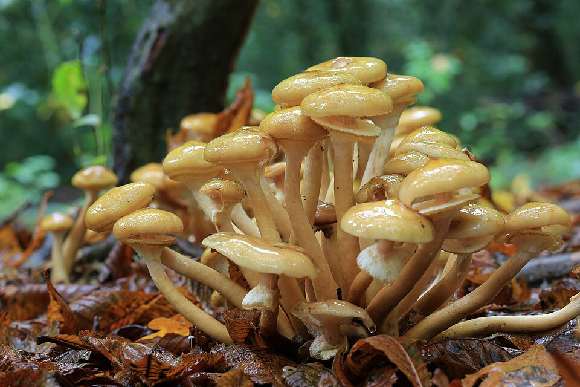
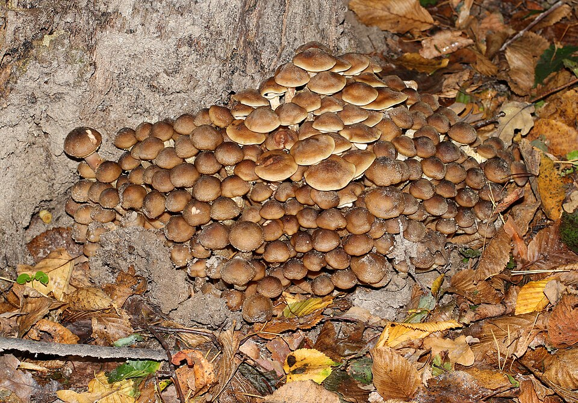

Opieńka miodowa
Armillaria mellea · rodzina opienkiowate (Physalacriaceae)



Sezon
VIII – XI (szczyt X)
Kapelusz
3–10 cm, miodowożółty
Typ
Blaszkowy z pierścieniem
Siedlisko
Kępy na pniakach i korzeniach
UWAGA
Gotuj min. 20 minut!
Nazwy w regionie
CZ: václavka obecná · SK: václavka medová
Opis i występowanie
Opieńka miodowa to jeden z najczęściej zbieranych grzybów jesiennych w środkowej Europie — i jeden z najczęstszych powodów zatruć. Rośnie masowo od sierpnia do listopada na pniakach, przy podstawach żywych i martwych drzew, tworząc charakterystyczne kępy złożone z dziesiątek owocników.
Kapelusz miodowożółty do brązowego, 3–10 cm, początkowo wypukły, potem rozpostartyw z małym garbem. Pokryty ciemnymi łuskami, szczególnie w centrum. Blaszki białe do kremowych (biały odcisk zarodnikowy!). Trzon z białym pierścieniem (annulus) — to kluczowa cecha. Bez pierścienia podejrzewaj inny gatunek.
⚠ Surowe SILNIE TRUJĄCE! Opieńka zawiera hemolizyny i lektyniany, które ulegają rozkładowi dopiero po gotowaniu minimum 20 minut. Objawy surowej opieńki: wymioty, biegunka, skurcze. Zawsze gotuj lub smaż przez pełne 20 minut.
Skład i zastosowania
| Składnik / zastosowanie | Info |
|---|---|
| Białko (2,5 g/100g) | Dobry po obróbce termicznej |
| Witaminy B, C | Odporność, metabolizm |
| Żelazo, cynk | Krew, odporność |
| Marynata | Idealna — utrzymuje kształt, kwasowość zabezpiecza |
| Zupa | Intensywny smak w wywarach |
Zbiór i obróbka
- Zbieraj tylko młode okazy — duże i stare bywają gorzkie i twardawe.
- Najlepsze kapeluszki, które jeszcze nie otworzyły się płasko.
- Trzon twardy i łykowaty — wyrzucaj lub używaj tylko do wywarów.
- Przed każdym przepisem: blanszuj 5 min, odlej wodę (zawiera hemolizyny), następnie gotuj właściwą potrawę.
Przepisy
🫙 Marynowane opieńki (tradycja)
- Opieńki obgotuj w osolonej wodzie 20 min, odlej wodę (wyrzuć!).
- Przelej zimną wodą. Zalewa: 500 ml wody, 200 ml octu, 2 łyżki cukru, 1 łyżka soli, liść laurowy, ziele angielskie, pieprz, czosnek.
- Zagotuj zalewę. Ułóż opieńki w słoikach, zalej gorącą zalewą.
- Pasteryzuj 20 min. Doskonałe na imprezę i do bigosu!
🍳 Opieńki smażone z cebulą
- Opieńki blanszuj 5 min, odlej wodę, przepłucz zimną.
- Cebulę podsmaż na złoto na maśle. Dodaj opieńki, smaż 15 min mieszając.
- Dodaj czosnek, tymianek, sól, pieprz. Podawaj z pieczywem lub do pierogów.
🥟 Krokiety z opieńkami
- Opieńki blanszuj, posiekaj, podsmaż z cebulą. Kapustę ugotuj, odciśnij.
- Wymieszaj grzyby z kapustą, dopraw. Farsz gotowy.
- Naleśniki zawiń z farszem, panieruj w jajku i bułce tartej.
- Smaż na złoto po 3 min z każdej strony.
🍲 Bigos z opieńkami
- Opieńki blanszuj 5 min, odlej wodę. Podsmaż z cebulą i kiełbasą.
- Kapustę kwaszoną ugotuj. Połącz z grzybami i mięsem.
- Gotuj na małym ogniu 1,5 h. Dopraw, najlepszy następnego dnia.
✓ Zalety
- Masowy grzyb — można zebrać kilogramy w jednym miejscu
- Doskonała do marynaty i bigosu
- Piękna forma kępy — charakterystyczna i rozpoznawalna
- Silny, intensywny smak w daniach
✗ Wady i uwagi
- Surowa silnie trująca — wymagana pełna obróbka termiczna
- Groźny sobowtór: hełmówka jadowita (śmiertelna!)
- Trzon twardy, często niezdatny do spożycia
- Możliwe rozstrój żołądka nawet po ugotowaniu u wrażliwych osób
☠ GROŹNY SOBOWTÓR: Hełmówka jadowita (Galerina marginata)
Rośnie w tych samych miejscach co opieńka — na drewnie, pniakach, przy korzeniach. Zawiera amatoksyny jak muchomor sromotnikowy — ŚMIERTELNA! Jak odróżnić:
• Opieńka: blaszki białe, pierścień biały (błoniasty, trwały), odcisk zarodnikowy biały
• Hełmówka: blaszki brązowe/rdzawe, pierścień brązowawy (delikatny, zanika), odcisk rdzawoczerwony, kapelusz cynamonowy
Gdy masz cień wątpliwości — zostaw w lesie.
Rośnie w tych samych miejscach co opieńka — na drewnie, pniakach, przy korzeniach. Zawiera amatoksyny jak muchomor sromotnikowy — ŚMIERTELNA! Jak odróżnić:
• Opieńka: blaszki białe, pierścień biały (błoniasty, trwały), odcisk zarodnikowy biały
• Hełmówka: blaszki brązowe/rdzawe, pierścień brązowawy (delikatny, zanika), odcisk rdzawoczerwony, kapelusz cynamonowy
Gdy masz cień wątpliwości — zostaw w lesie.
Ciekawostki
- Grzybnia opieńki to jeden z największych organizmów na Ziemi — w Oregonie USA znaleziono kolonię zajmującą 965 ha i ważącą szacunkowo 600 ton. Ma ok. 8500 lat.
- Opieńka jest pasożytem i saprofitem — atakuje żywe drzewa (głównie osłabione) i rozkłada martwe drewno. Leśnicy uważają ją za szkodnika.
- W Czechach i Słowacji václavka to klasyczna grzyb jesienny, zbierany masowo na marynaty.